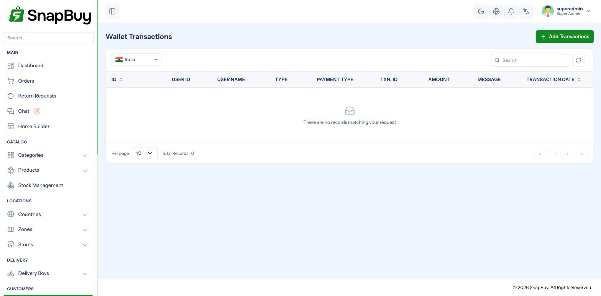
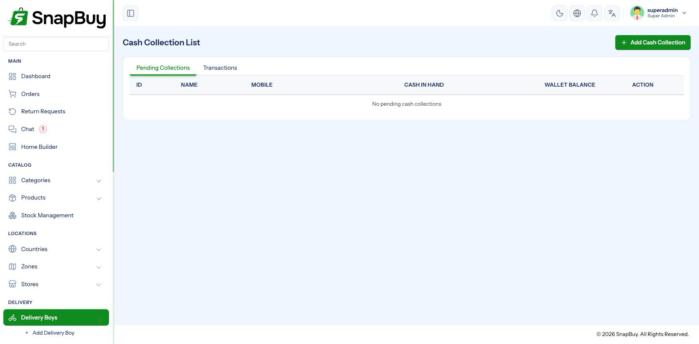
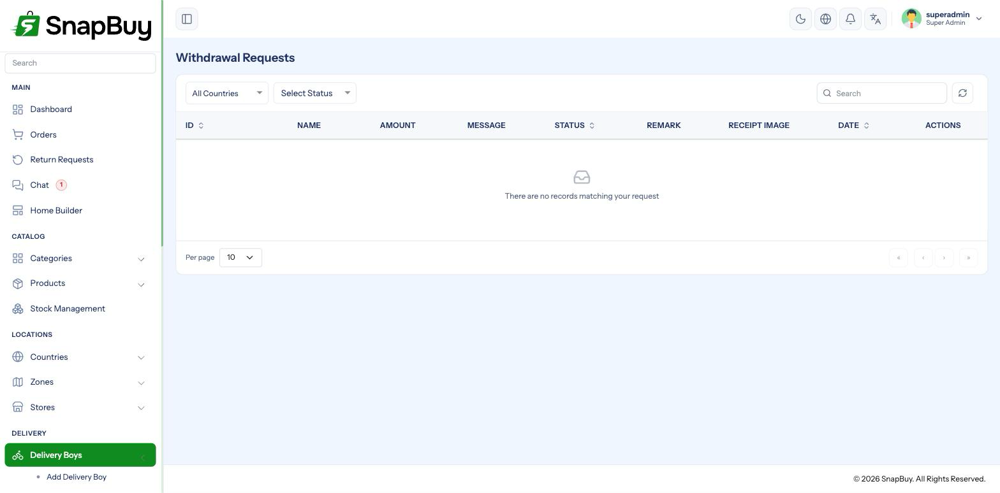

Wallet, Withdrawals & Settlements
Menu paths: Wallet Transactions, Withdrawal Requests, Transactions
Money inside SnapBuy moves through wallets. Customers hold a wallet balance; delivery boys hold one too. Both can request that balance out as a real payout.
Restrict these screens by role
Everything on this page moves money. Grant customer and withdrawal_request permissions only to people who should be approving payouts. See Roles & Permissions.
Customer wallet
A customer's wallet balance can come from several places:
| Source | Notification |
|---|---|
| Top-up by the customer | wallet_recharged_customer |
| Failed top-up | wallet_recharge_failed_customer |
| Manual credit by an admin | wallet_admin_credit_customer |
| Order cashback | wallet_cashback_customer |
| Referral bonus | wallet_referral_bonus_customer |
| Refund for a returned item | wallet_refund_returned_customer |
| Refund for a cancelled item | wallet_refund_cancelled_customer |

Manual wallet credits are real money
Crediting a wallet by hand creates spendable value with no payment behind it. It is the right tool for goodwill and for resolving a dispute — and the wrong tool for anything routine. Every credit is recorded in the activity log against your account.
Refunding to wallet keeps the value in your store
A wallet refund is instant, avoids gateway refund fees, and the customer usually spends it with you again. Offer it as the fast option, but never as the only option — customers are entitled to their money back by the original method.
Referral and cashback credits are queued
Both are paid by background jobs.
No cron, no referral bonuses
Referral and cashback credits are dispatched to the queue. Without the cron job running they are never paid, and customers who were promised a bonus never receive it. Check the cron heartbeat before investigating individual cases.
Referral amounts and limits are set per country — see Countries.
Delivery boy money
Riders have three separate money flows. Keeping them straight is what makes reconciliation possible.
| Screen | What it records |
|---|---|
| Cash Collection | Cash the rider took from customers on COD orders |
| Salary Transactions | What you pay the rider |
| Settlement History | Reconciliation between the two |

The direction of travel
On a COD order, the customer's cash goes to the rider, not to you. The rider is holding your money. Cash collection records that debt; settlement clears it.
Reconcile cash collection regularly
Unreconciled COD cash is the most common source of loss in delivery operations. A rider carrying several days of collections represents real exposure — settle daily or weekly, and never let it drift.
Rider earnings include any bonus configured in App Settings.
Withdrawal requests
Both customers and delivery boys can request a payout of their balance. Requests arrive with a status of Pending.

| Status | Meaning |
|---|---|
| Pending | Awaiting your decision |
| Approved | Paid out |
| Rejected | Declined |
Approving requires a receipt
Approval will not save without a receipt image
SnapBuy enforces this: "The receipt image is required when the status is approved." Upload proof of the bank transfer or UPI payment before marking a request approved.
This exists to protect you. A payout marked approved with no evidence is indistinguishable from one that never happened, and you will be the one asked to prove it.
Rejecting requires a remark
A rejection reason is mandatory
"A remark is required when the status is Rejected." Maximum 500 characters. Write something the recipient can act on — "bank details do not match account name" rather than "rejected".
Notifications
| Event | Audience |
|---|---|
withdrawal_request_admin | You, when a request is raised |
withdrawal_status_delivery_boy | The rider, when you decide |
Enable the admin notification
Without withdrawal_request_admin, payout requests sit unnoticed in the panel. Riders waiting on money they have earned is the fastest way to lose them. Enable it in Notification Settings.
Pay out only what you actually hold
Check cash collection before approving a rider payout
A rider may be holding several days of uncollected COD cash while requesting a withdrawal of their earnings. Approving the payout without settling the cash means paying twice.
Order of operations: settle the cash, then assess the withdrawal.
Transactions
Transactions is the ledger of payment gateway activity — what customers paid, through which gateway, and whether it succeeded. Use it to reconcile against your gateway dashboard.
Reconcile against the gateway, not against orders
If your panel and your gateway disagree on what was collected, the gateway is the authority on money received. A discrepancy usually points at a missing webhook — see Payment Gateways.
Troubleshooting
| Symptom | Cause | Fix |
|---|---|---|
| Referral bonus never credited | Cron not running | See Cron Jobs |
| Cashback missing | Queued job unprocessed, or country values are zero | Check cron; check the country |
| Cannot approve a withdrawal | Receipt image not uploaded | Upload proof of payment |
| Cannot reject a withdrawal | Remark empty | Enter a reason |
| Requests going unnoticed | Admin notification disabled | Enable withdrawal_request_admin |
| Rider balance looks wrong | Cash collection not settled | Reconcile in Settlement History |
| Wallet refund not received | Refund not actually issued | Check the wallet transaction record |
| Panel and gateway totals disagree | Missing webhook | Register the webhook URL |